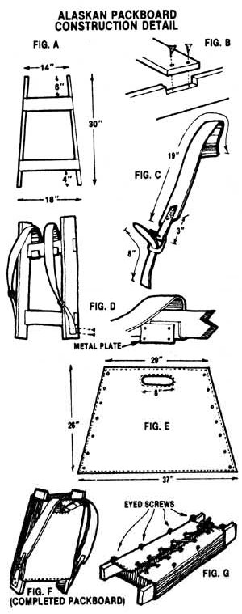

It seems only a few years ago that the famous Trapper Nelson pack (or Alaskan board) was the only kind of pack you would ever see in the woods. Before the advent of the aluminum-magnesium frame and the whisper-light nylon pack, it was the toughest, strongest, most practical rig to be found.
You'd think that the coming of the lightweights would bring about the demise of the old boards, but in the miner's camp or the trophy hunter's bivouac the Alaskan pack is as important as ever. Granted, it's no fun to wander down the trail with 300 pounds of supplies strapped to the old-fashioned board, but it's a darned sight better than trying it with one of the modern, tubular-frame packs!
Click here for downloadable illustrations.
You construct the pack's frame out of hardwood stock, the straps out of nylon webbing, and the cover portion out of heavy cotton canvas. When installing the straps, remember that the crossmembers eventually will be situated away from the wearer's back. When completed, the canvas cover will be stretched tight across the open part of the frame as a back support.
The Alaskan packboard may not be as sleek or comfortable as the modern frame pack, but if the load is large-or if tradition is your forte-it's a heavyweight classic of the wilderness trail. (My father, for example, once packed a cast-iron stove into a lookout shack with one of these contraptions, and other equally stalwart outdoor people have performed similar feats for generations. It certainly illustrates the enormous capacity of this marvelous packboard!)
PACKBOARD CONSTRUCTION
First, make the frame members out of 3/4" thick hardwood strips, about 3" wide (3/4" X 3" maple or ash is commonly used), cutting the strips to the lengths shown in Fig. A. Now, carefully fit both the upper and lower crossmembers into the notched uprights for a smooth, flush finish, as detailed in Fig. B. It's a good idea to glue the joints carefully before setting the screws.
Next, make the straps out of 2-1/2"-wide nylon webbing, cutting to the dimensions shown in Fig. C. Sew leather or nylon straps (with buckles) to the webbing so that the straps will be adjustable. (You may also wish to pad them for comfort.) Wrap the upper straps around the upper crossmember, and secure them with a piece of aluminum or tin cut from a can, and drilled or punched for four 3/4"-long screws, as in Fig. D. Remember that the crossmembers and lacing will be on the outside of the pack, and the solid canvas directly against your back.
Now, cut the back support out of heavy cotton canvas. Make sure it meets the dimensions shown in Fig. E after hemming all the sides. Cut and hem an 8" oval hole in the upper center of the panel, about 3" below the hemmed upper edge. Install seven grommets on each side, wrap the canvas around the frame, and close it with a 72"-long piece of rawhide or nylon cord.
The shoulder straps pass through the hemmed oval hole in the back support, as in Fig. F. Connect the straps to the bottom of the frame with wood screws and fabricsupport washers (ask for these special washers at a fabric store).
Finally, as in Fig. G, insert "eyed" screws into the laced side of the boards. They'll be used for lashing the load on with cord, or for attaching a custom packsack . . . which is our next project.
THE ALL-PURPOSE PACKSACK
A companion to the Alaskan packboard, this all-canvas sack is neither as light nor as stylish as the bright nylon creations of today. But, like the board it's designed to fit, the packsack is unbelievably practical. In the old days, it wasn't considered a bit unusual for a trail crewman to arrive at camp after a ten-mile uphill hike and unload from his packsack a varied array of goods that might consist of a dozen railroad spikes, three apples, two neat bundles of dynamite, and a glass bottle of caustic moonshine! These assorted commodities, his personal clothing and gear, and even a few chocolate chip cookies all made the trek in perfect condition, largely because of the strength, roominess, and stability of his oversized pack.
When carefully constructed, the all-purpose packsack will last through a good many years of hard service. It's probably the most efficient heavy-load pack on earth!
CRAFTING THE PACKSACK
The finished packsack, as shown in Fig. 1, is essentially a canvas box that can be attached to the Alaskan packboard by lacing a cord through grommets that match the eyed screws on the packboard. If you wish, you can make the pack larger or smaller, or add outside pockets and zipper closures. (The accompanying drawings provide instructions for one exterior pocket.) Let your imagination and the amount of leftover canvas on hand determine just how elaborate your pack will be.
To build it, first cut the back and flap of the sack from a single piece of heavy canvas. Double-stitch hem the canvas to the dimensions shown in Fig. 2, and install two grommets at the top to use for tying the flap down. Now cut and double-hem the basic body pattern to the dimensions shown in Fig. 3. (If you can't find a piece of fabric of sufficient size, cut the bottom flap out separately and attach it to the upper piece with a flat-felled seam.)
Fold the sides into a box shape, as in Fig. 4, and double-stitch them to the bottom piece. A 2" flap extends beyond the completed bottom to help you sew the body to the back. (If you want to add outside pockets, cut them from canvas, as in Fig. 5, and sew them to the body piece before you connect the body and back pieces of the sack.)
Join the hemmed body (with 2" flaps all around) to the back piece with at least a double seam. The flap extends above (see Fig. 6). Now, install grommets along each margin of the sack to match up with the eyed screws on the packboard. Make sure the grommets are large enough to allow the eyed screws to protrude through far enough to accommodate a piece of wire at least 26" long, as in Fig. 7. (The wire runs down each row on the sides of the pack in order to secure the sack to the board.)
Now sew two fabric loops or D-rings to the bottom of the completed sack, so you can lash the storm-flap down. Finally, tie a pair of nylon cords (each at least 18" long) through the flap grommets to secure the entire bundle, as shown in Fig. 8.
That's it . . . you're ready to load up and hit the trail!
From Make It and Take It: Homemade Gear for Camp and Trail by Russ Mohney.
Copyright © 1977 by Pacific Search Press. Seattle, Washington Adopted with permission of the publisher.
|
 See the text for a downloadable image. |
|
|